Flagship case study · Live product
LaCasa Retreats manages 17 live short-stay rental properties across Noida. I designed and built the guest-facing booking site and the internal operations tooling behind it, solo, end to end — and continue to maintain it in active production. This is a reverse case study: walking backward from the shipped product to the research and decisions that produced it, then forward again through wireframes into the real, live screens.
17
Properties live
5
Booking channels
Solo
Design & build
~5wk
MVP timeline
Role
Product Designer & Developer
Team
Solo — client as sole stakeholder
Timeline
MVP in ~5 weeks, active maintenance since
01 · Research & thought process — the problem
LaCasa's properties are sold on their own website and, simultaneously, on Booking.com, Agoda, MakeMyTrip/Goibibo, and Airbnb. A guest can book the same physical unit through any of those platforms, completely outside this website's control. Without a shared source of truth, the same dates could be sold twice.
Who's involved
Book a property for a stay. Most don't want friction like a mandatory account before they can pay.
Record bookings, keep the calendar accurate, make sure no property is ever double-committed.
Check revenue and booking status remotely, reconcile anything that slipped through.
What I discovered
Insight 01
Booking.com, Agoda, MMT and Airbnb each worked fine on their own. Nothing stopped the same physical room being confirmed twice.
Insight 02
"This month's baseline, weekends a bit higher" — a per-date rate tool was solving a problem nobody had.
Insight 03
The fix was making email itself the identity key, not gating checkout on registration.
How I approached it
01 — Understand
Sat with how bookings actually got recorded before the site existed: a WhatsApp group, ad-hoc reconciliation.
02 — Structure
Mapped guest booking and operator logging onto one shared calendar.
03 — Simplify
Cut each flow to its minimum unit of work: one source tag, one monthly rate, one email identity.
04 — Ship & harden
Shipped into daily use, backed by email reconciliation and dedicated test coverage on pricing/overlap logic.
From insight to solution
01 · Two guests, one room
The tension
Availability lived in five places. Automatic sync was impossible with no unified channel-manager access.
The call
Make logging an external booking the fastest action in the product, tagged with its source, blocking dates everywhere.
Result
A unit sold on Airbnb can no longer be sold on the website. Still depends on a human logging it in time.
02 · Too many dates to price
The tension
Setting prices night-by-night across 17 units was technically complete and operationally unusable.
The call
One Sun–Thu and one Fri–Sat rate per month, applied to every property at once, with per-day overrides.
Result
Seasonal repricing across 17 units went from an afternoon to under a minute.
03 · Account, or conversion
The tension
The business needed to know who the guest was; a signup wall in front of payment kills conversion.
The call
Let them pay with name, email, phone. Key the booking to the email — identity becomes retroactive.
Result
No signup wall, no fragmented history. Only as reliable as the email typed at checkout.
02 · Wireframes
Mid-fidelity structure for the three flows above, before final visual design — built and refined directly in Figma.
PropertyStatusPage.tsx
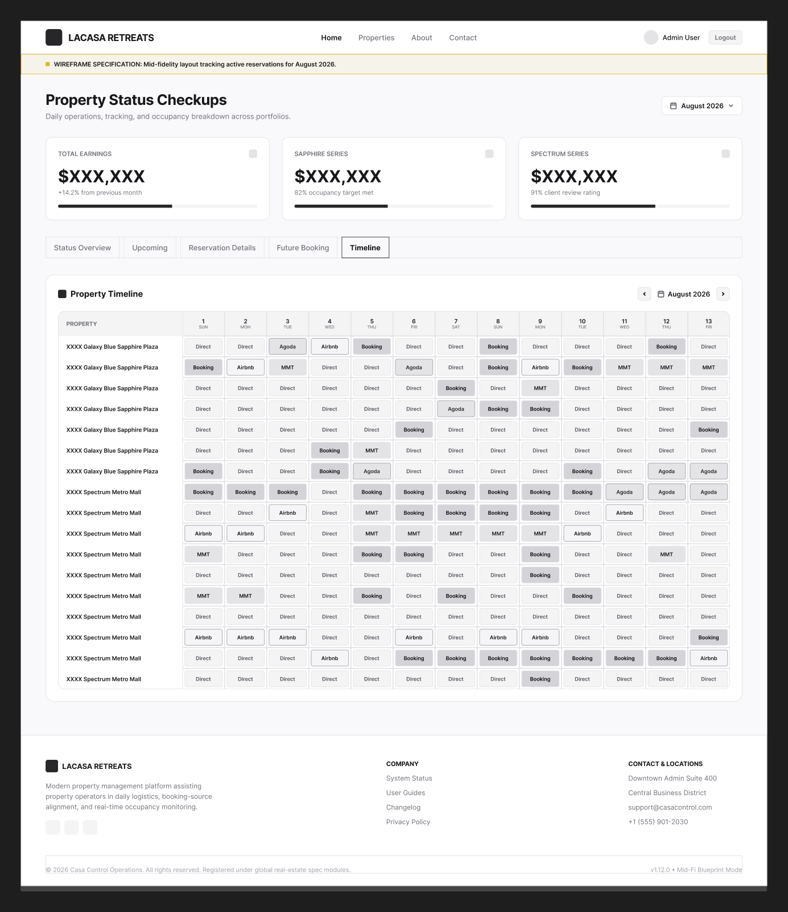
Decision: logging an external booking is the single fastest action on the page, and it blocks the date everywhere immediately. Reason: this is filled in mid-call with a guest — any friction here reintroduces the exact double-booking risk the feature exists to prevent.
AdminPage.tsx:845
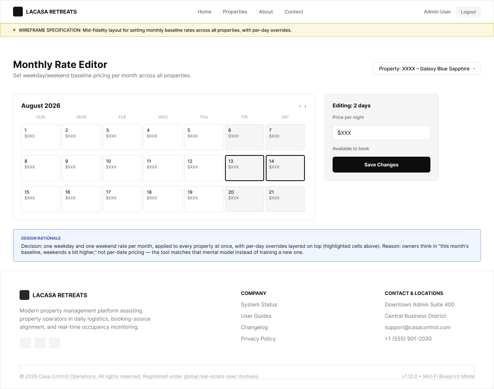
Decision: one weekday and one weekend rate per month, applied to every property at once, with per-day overrides layered on top. Reason: owners think in "this month's baseline, weekends a bit higher," not per-date pricing — the tool matches that mental model instead of training a new one.
CheckoutPage.tsx
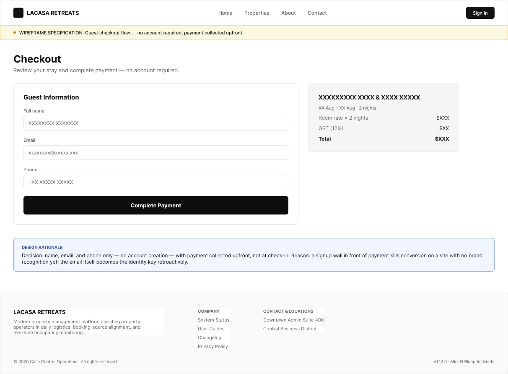
Decision: name, email, and phone only — no account creation — with payment collected upfront, not at check-in. Reason: a signup wall in front of payment kills conversion on a site with no brand recognition yet; the email itself becomes the identity key retroactively.
03 · Hi-fi screens
Not recreations — screenshots of lacasaretreats.com in active production, in LaCasa's own black + gold brand.
Guest-facing
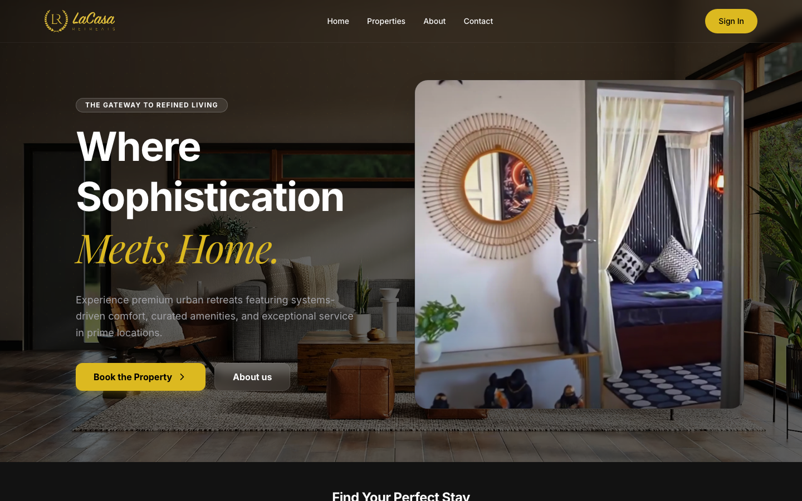
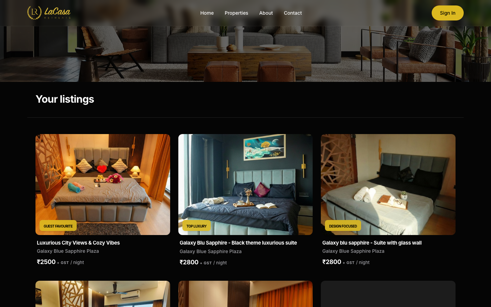
Manual channel timeline PropertyStatusPage.tsx
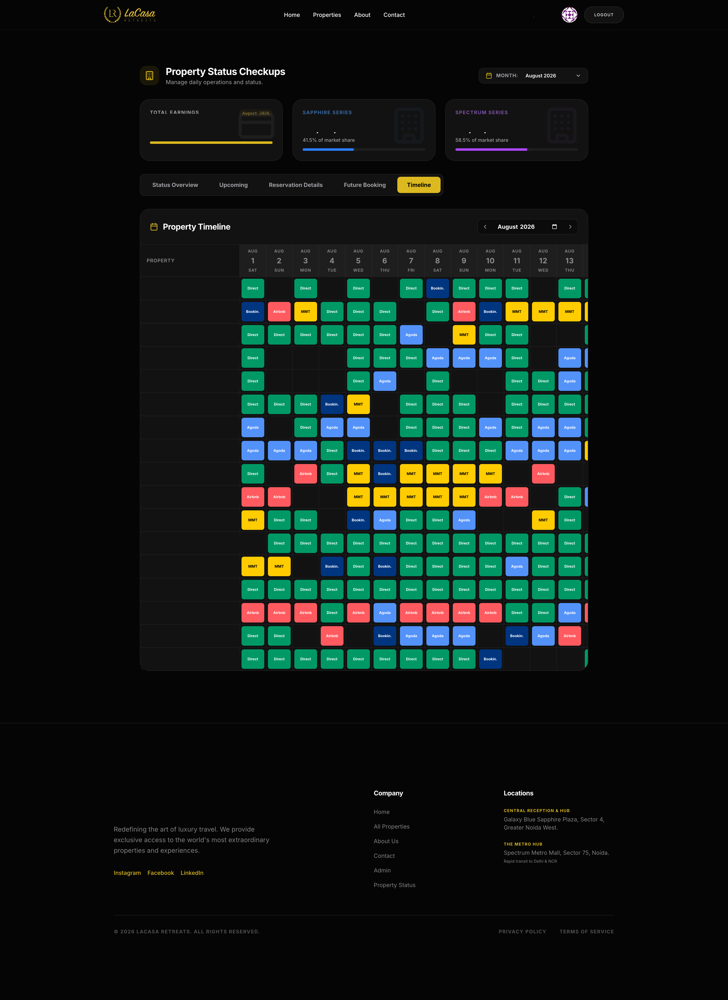
Reservation write path
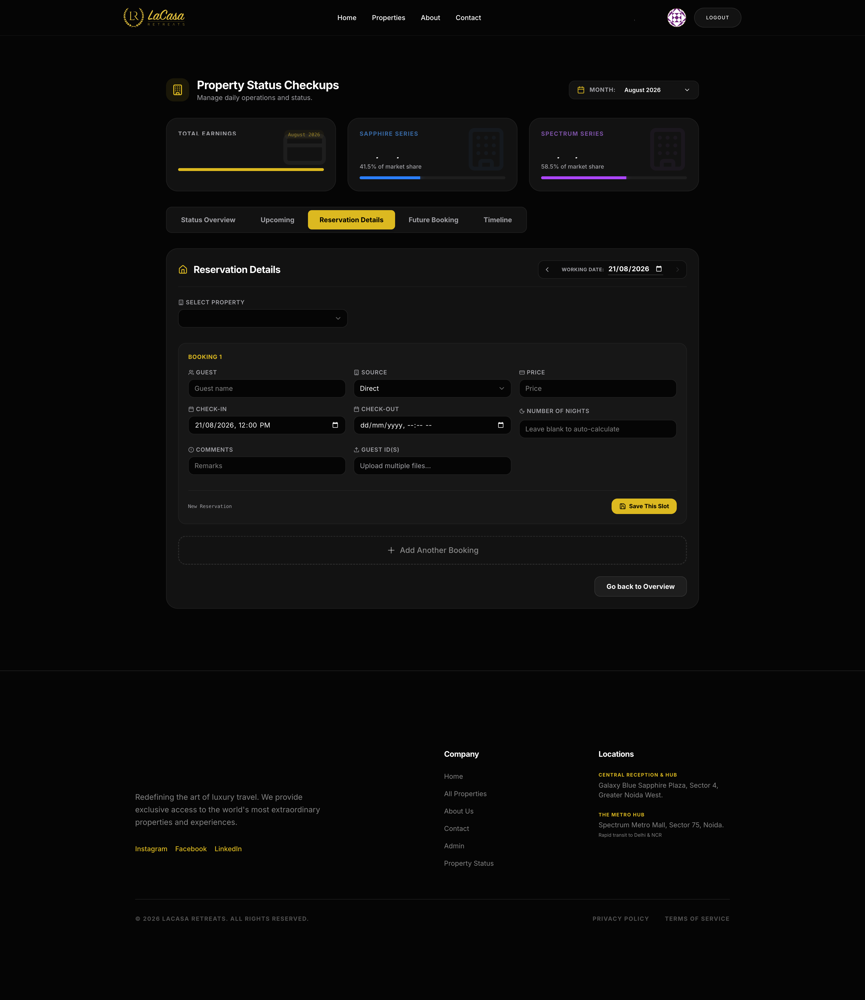
Rate editing AdminPage.tsx:845
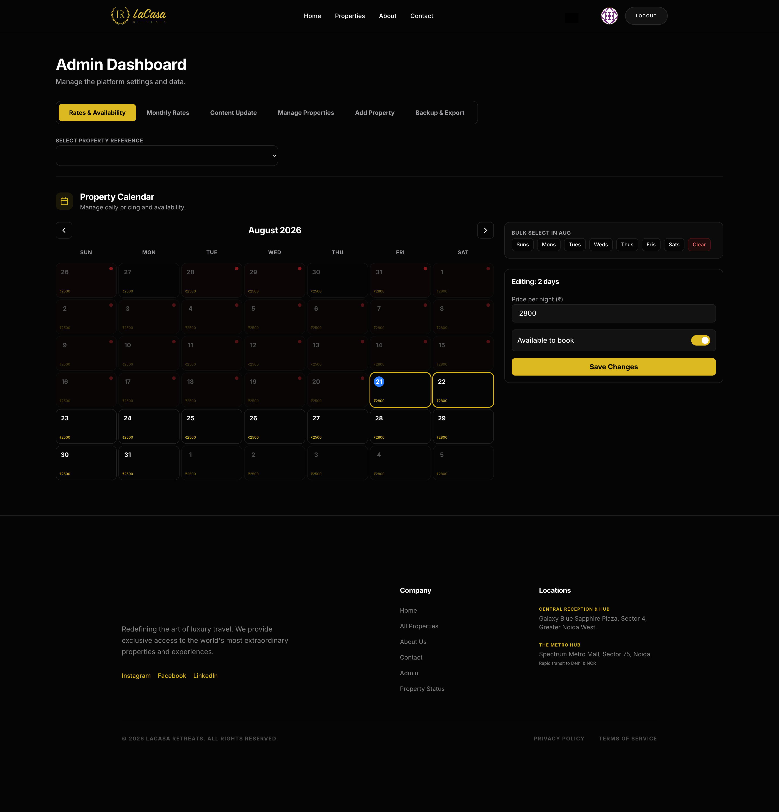
Monthly rate editor — weekday/weekend baseline across all properties.
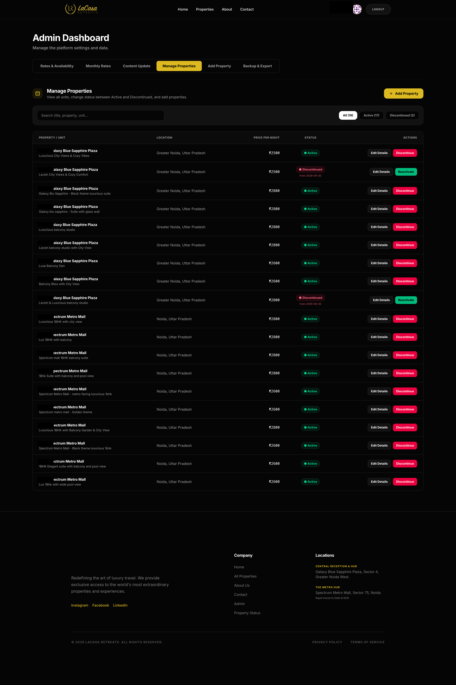
Per-property overrides — bulk day-of-week selection, then price + availability.
Booking & checkout CheckoutPage.tsx
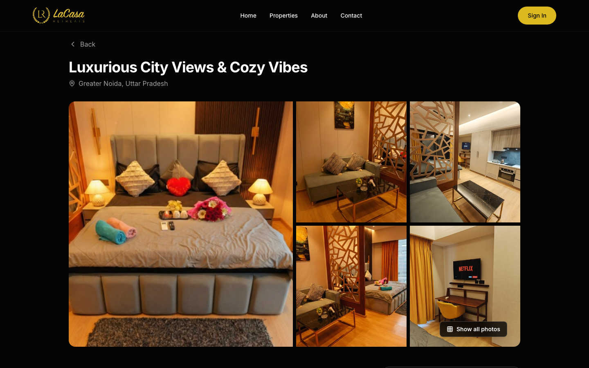
Property detail & booking widget — name, email, phone only, no forced account.
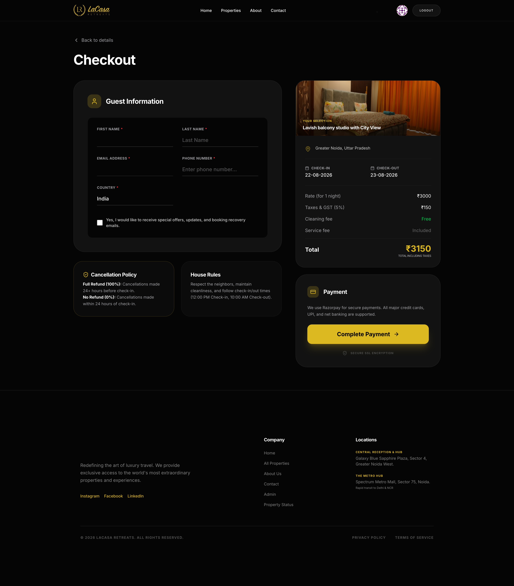
Checkout — GST broken out as its own line, price card pinned beside the form.
Impact
< 1 min
Seasonal repricing across 17 units — down from an afternoon
1 calendar
Consolidated from 5 disconnected booking channels
Structured GST
Computed from data, no manual reconstruction from conversations
Scope
No live OTA API integration — manual entry backstopped by email reconciliation. Breaks down around 30–50 properties.
Guest checkout over mandatory signup — protects conversion, needs email-keyed matching.
Monthly baseline + override over dynamic pricing — simpler to operate, doesn't react to demand.
Before vs. after
Reflection
Design the manual-entry flow mobile-first — it's used mid-call, standing up, on a phone, and today it's still fundamentally a desktop grid.
Instrument the funnel earlier — decisions were reasoned from conversations, not data collected from week one.
Push back harder on locking the visual design before build started — three days on the logo up front cost more time than it saved.
"The website made our lives easy. We can scan the entire business in a few minutes and know almost everything about sales and profits — great work by Dhruv."
Siddhant Sharma — Stakeholder, LaCasa Retreats
View the design system →